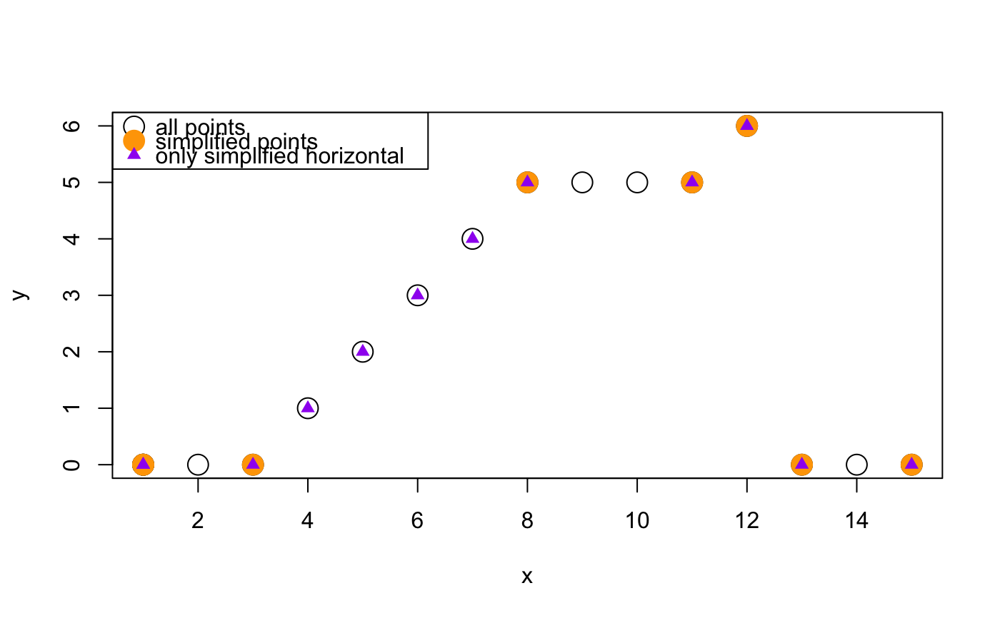

Simplify XY coordinates to minimal line segments
simplifyXY(xy, minN = 3, restrictDegrees = NULL, ...)
| xy | numeric matrix of two columns x,y |
|---|---|
| minN | integer minimum number of consecutive points to cause compression to occur. It requires at least 3 points inherent to the algorithm. |
| restrictDegrees | numeric vector of allowed angles in degrees (range 0 to 360) of angles allowed to be compressed, when supplied all other angles will not be compressed. |
| ... | additional arguments are ignored. |
This function takes a numeric matrix of x,y coordinates and returns the minimal matrix of x,y coordinates that represents the same line segments. It is intended in cases where there is a long repeated line segment that could be represented by far fewer points.
Other jam spatial functions:
bgaPlotly3d(),
compressPolygonM(),
dfWide2segments(),
spline3d()
#> Warning: number of rows of result is not a multiple of vector length (arg 2)legend("topleft", pch=c(1, 20, 17),# box.col="black", border="black", pt.cex=c(2, 3, 1), col=c("black", "orange", "purple"), legend=c("all points", "simplified points", "only simplified horizontal"));